CGM
This section allows you to choose your glucose data source. Most options are self-explanatory. For more information on compatible CGMs, please see the following link.
Step 1: Add CGM
The first step in setting up your continuous glucose monitor (CGM) on Trio is to tap the "Add CGM" button in the Devices Menu
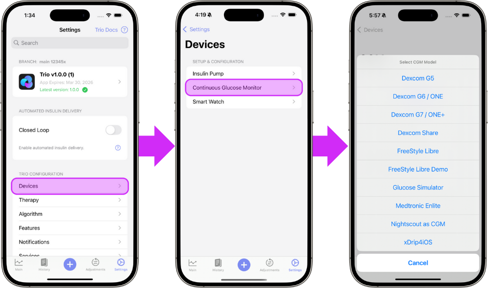
Step 2: Select Your CGM
Select your CGM from the in-app menu and from the options below for step by step instructions. The links below will guide you through the connection instructions for your specific CGM:
Trio will intercept glucose readings between the transmitter and the Dexcom app. If you are using a Dexcom G5, G6, or ONE sensor, tap Configuration CGM to enter your transmitter's 6-digit ID. Dexcom Share Credentials are not necessary. When you switch transmitters, you must delete your current transmitter from Trio by tapping Configuration CGM, scrolling down, and tapping Delete CGM. Once you do this, you can add the new transmitter with its Transmitter ID.
Step 3
Enter your 6-digit Dexcom transmitter ID.
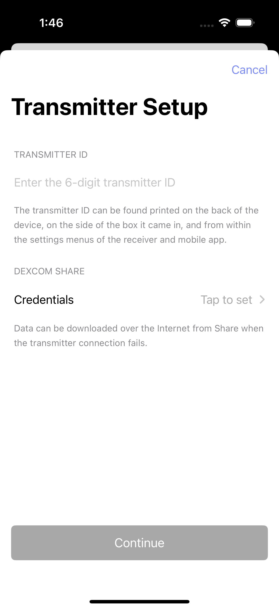
Step 4
Continue to Connect Watch OR return to New User Setup
As long as the Dexcom G7 or ONE+ app is installed on the same phone, Trio can intercept its glucose readings. When a new G7 or ONE+ sensor is paired to the Dexcom app, Trio will automatically start reading it.
Step 3
Tap "Continue" to use the G7/ONE+ as your CGM source
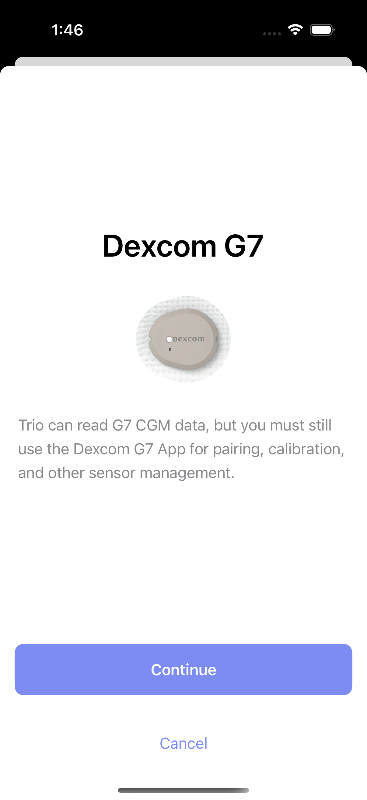
Step 4
Continue to Connect Watch OR return to New User Setup
FreeStyle Libre 1 / 2 / 2 Plus
This option can be used to pair a compatible Libre 1, Libre 2, or Libre 2 Plus sensor directly to Trio without going through a separate app like xDrip4iOS. In the in-app menu, it is listed as "FreeStyle Libre 1 / 2 / 2+". For Libre 3 and Libre 3 Plus sensors, see FreeStyle Libre 3 / 3 Plus instead.
Step 3
Tap "Libre 2 Direct" to use Libre 2 sensors or "Bluetooth Transmitters" to use Libre 1 sensors with a Miao Miao or other 3rd party transmitter.
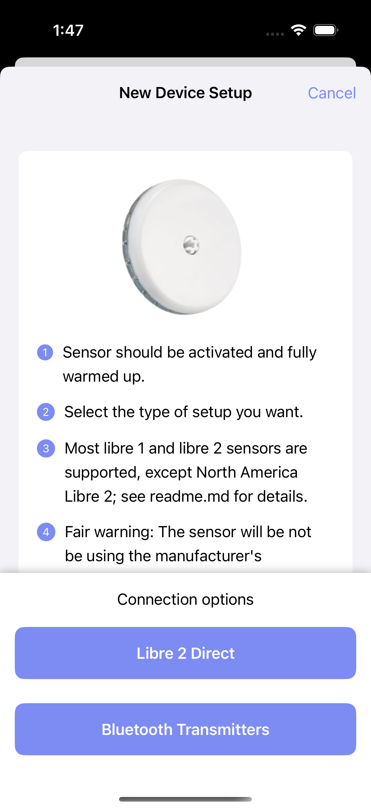
Step 4:Libre 2 Direct
Tap "Pair Sensor" to connect your Libre 2/2+ sensor to Trio
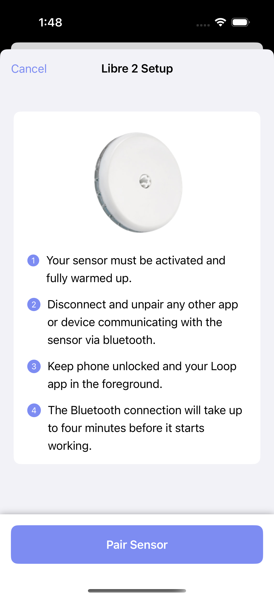
Step 4:Bluetooth Transmitters (Libre 1)
Select your 3rd party transmitter from the list of found devices and tap "Save"
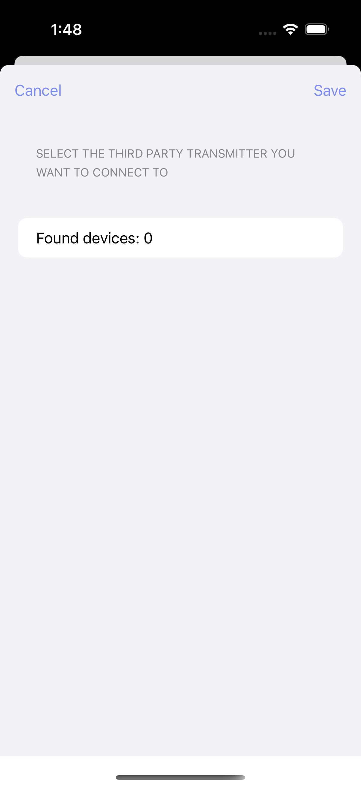
Step 5
Continue to Connect Watch OR return to New User Setup
FreeStyle Libre 3 / 3 Plus
Available in main / Trio 1.0.2
The pinned 1.0.2 app includes the Libre 3/3+ driver; dev is not required solely for Libre 3 availability. Its app-menu label still includes "(Beta)".
Upgrading to Trio 1.0.2: re-pair the sensor
The official 1.0.2 release notes say the changed driver cannot retain the previous pairing. Re-pair the existing sensor after the upgrade; the release notes do not require a new sensor. Read the official version-specific upgrade note. Initial sensor activation and recovering/re-pairing a running sensor are different workflows.
Driver-procedure validation scope
The detailed procedure retained below comes from the captured docs source. Sensor startup/recovery behavior depends on the pinned LibreLoop driver and the sensor's prior state; this alignment update does not independently validate every driver-screen instruction.
Trio starts the sensor, and only one app can read it
Trio starts (activates) the sensor itself while pairing, so pair a new sensor that you have not started in another app.
A Libre 3 sensor answers only to the app that started it. A sensor you start in Trio can no longer be read by the FreeStyle Libre 3 app, and a sensor you already started in the FreeStyle Libre 3 app cannot be paired to Trio.
The FreeStyle Libre 3 app's alarms will not reach you
Because Trio reads the sensor directly, the FreeStyle Libre 3 app's low and high glucose alarms are not active while the sensor is paired to Trio.
Set up Trio's own Glucose Alarm Limits before you rely on this CGM, and consider a remote monitoring option such as Nightscout so someone else can see a low or high that you miss.
Wait until warm-up is completed
A newly started sensor warms up for about 60 minutes and reports no glucose during that time. Trio shows the remaining warm-up time on the home screen.
Before using automated insulin delivery, be sure the warm-up has completed and the readings look reasonable to you.
A paid Apple Developer account is required
Pairing uses Near Field Communication (NFC), the short-range technology that lets you hold your phone against the sensor to talk to it. NFC is not available when Trio is built with a free Apple Developer account. See Apple Developer Account.
Step 3
Apply a new sensor to the back of your upper arm. Tap "HOW TO APPLY A SENSOR" if you would like Trio to walk you through it, then tap "Next".
Step 4
Tap "Start pairing", then hold the back of your phone against the sensor and keep it still. Your phone vibrates once the sensor is paired. If the phone moves away too early, the scan fails and you can try again.
Step 5
Wait for Trio to finish pairing. Trio starts the sensor, connects to it over Bluetooth, and then receives a glucose reading every 5 minutes once warm-up is finished.
Step 6
Write down your Receiver ID, which you will find in the Debug Info section of the Libre 3 CGM settings page. The Receiver ID is the identifier the sensor remembers Trio by, and it is the only way to re-pair a sensor that is already running, for example after you delete the CGM from Trio or reinstall the app. To use it, tap "Recover existing sensor" on the pairing screen and enter the ID. When you re-pair a sensor that is already running, Trio shows "Stabilizing" for a while and does not display glucose readings the sensor itself flags as unreliable.
Step 7
Continue to Connect Watch OR return to New User Setup
Eversense E3 / 365
Wait until the initialization phase is completed
During the initialization phase of this system, the glucose reading might be incorrect.
Before using automated insulin delivery, be sure to complete the initialization phase using the original Eversense app.
Since swelling at the insertion site can cause inaccurate readings, make sure that you are getting stable readings
before switching to Trio. This could be as long as the start of weekly calibrations (Day 14).
Do not use the Eversense 365 app and Trio concurrently
The 365 transmitter is not able to connect to multiple apps or devices at the same time, due to the security protocol.
Make sure you either use the Eversense app or Trio, but not both at the same time.
Step 1
Disconnect from the Eversense app
Go to Connect from the main menu and click on the connected sensor.
Press OK to disconnect the transmitter.
Step 2
Forget the transmitter from Bluetooth on your phone.
Step 3
Select whether you want to pair the Eversense E3 or the Eversense 365.
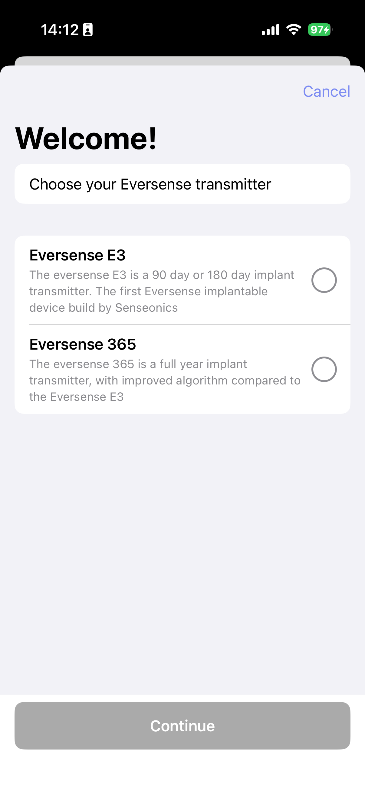
Step 4 (only for Eversense 365)
Log in using your Eversense account. If you do not have an accunt or you forgot your password, the appropriate links are included in this step
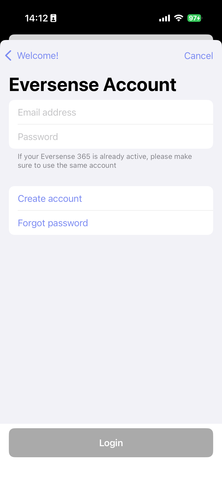
Step 5
Now put your Eversense transmitter in pairing mode (done by tapping the button 3 times), and wait till your Serial Number shows up on screen.
Click on the found transmitter, accept the pairing prompt (if show), and wait untill the pairing process is completed!
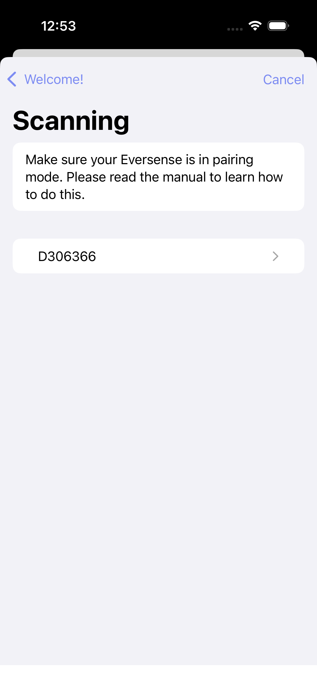
Step 6
Continue to Connect Watch OR return to New User Setup
Accu-Chek SmartGuide
You must build the dev branch to use the Accu-Chek SmartGuide CGM at this time
The Accu-Chek SmartGuide CGM is in dev and is experimental for now
Step 3
Wait a minute while Trio is scanning for your Accu-Chek SmartGuide
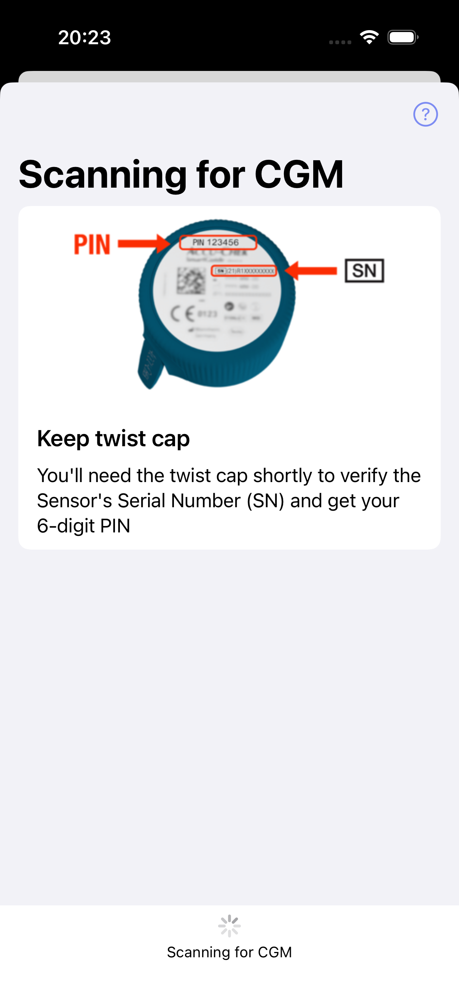
Step 4
Once Trio has found your Accu-Chek SmartGuide, it prompts you to confirm the Serial Number.
This Serial Number can be found on the twist cap of your applicator.
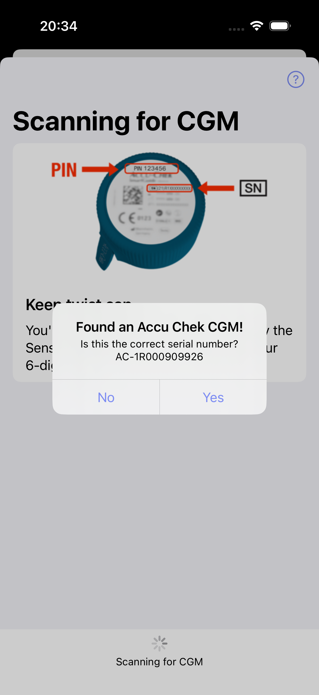
Step 5
After you've confirmed the Serial Number, Trio will pair and configure your CGM.
It might be the case that iOS asks for a Bluetooth pairing code, this code can be found at the top of the twist cap.
After pairing, be sure to either never remove your CGM from the Bluetooth list or keep the twist cap/pincode somewhere safe.
Note you will need this pincode if you want to migrate to a new phone
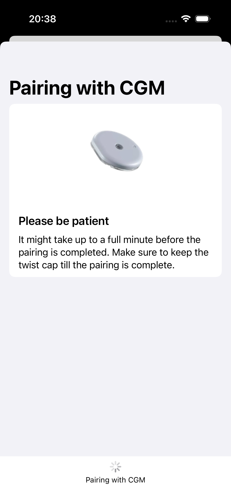
Step 6
Continue to Connect Watch OR return to New User Setup
Glucose Simulator
Warning
If using a Glucose Simulator, it is important to understand:
- You will only experience the user interface of Trio.
- Using a Glucose Simulator does not indicate how the app will perform, nor will it give accurate guidance or suggestions for insulin dosing.
- A Glucose Simulator should NEVER be used with a live pump connected to a living person or pet.
- Only use a Glucose Simulator if you understand the conditions above.
Step 2
Continue to Connect Watch OR return to New User Setup
Nightscout as CGM
While using Nightscout as a CGM is an option, it should be avoided if possible because it does not keep Trio running in the background like other CGM options.
Step 2
Continue to Connect Watch OR return to New User Setup
xDrip4iOS
To use xDrip4iOS as a CGM source, you must build it yourself with the same Apple Developer account you used to build your Trio app. You cannot use Shuggah or a version distributed by someone else's TestFlight. Please see the following for instructions on how to build xDrip4iOS yourself: link
However, if you are using Dexcom G6 or ONE with xDrip4iOS, you can choose the Dexcom G6 option in Trio rather than xDrip4iOS, and Trio will intercept the glucose readings even if you're using Shuggah or someone else's TestFlight of xDrip4iOS.
Step 2
Continue to Connect Watch OR return to New User Setup
Smooth Glucose Value
Default: OFF
Smooths CGM readings using Savitzky-Golay Filtering
1.0.2 source references
- F07 — Libre 3 documentation still claims dev-only availability